A nyomtatványkitöltõ programba
betölthetõ xml állományok, amelyek csatolmányt is tartalmaznak egyedi
kiterjesztést kaphatnak xcz néven. Ez a
típusú állomány összerendelhetõ az ÁNYK programmal.
Ezek a nyomtatványkitöltõ program
számára importálható
állományok. Az összerendelést a program
elvégzi, ha van hozzá jogosultsága. Ha nem
elegendõ a jogosultság, akkor kézzel is el lehet
végezni.
Az xcz kiterjeszésû állományokat az abevjava_start_import.bat-al
kel összerendeli, amely az ÁNYK indító könyvtárában
található.
Windows ME esetén
- A "Saját gép"-re duplán kattintva nyissa meg a "Saját gép"-t.
- A "Saját gép" Eszközök menüjében kattintson a Mappa beállításaira.
- A megjelenõ ablakban válassza ki a
Fájltípusok fület, és aztán kattintson
az Új gombra. A következõ ablak látható:
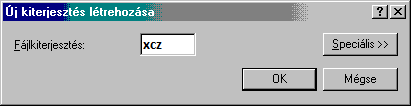
- Írja be az xcz-t és kattintson az OK gombra.
- Ezután kattintson a Módosítás gombra
- Válassza ki a használni kívánt
alkalmazást az Egyéb gombra kattintva, és
tallózza fel a java-s nyomtatványkitöltõ program
telepítési könyvtárát és ott
válassza ki az abevjava_start_import.bat-ot:
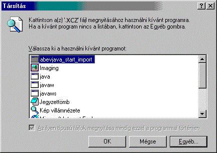
- Az OK gombra kattintva mentse el a beállításokat.
- Az alábbi beállításokat látja.
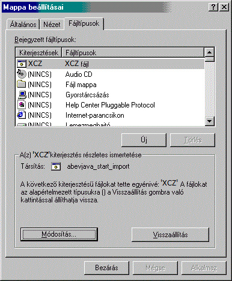
- A Bezárás gombra kattintva véglegesítse a beállításokat.
Windows 2000 esetén
- Válasszon ki egy xcz kiterjeszésû állományt és az egér jobb gombjával kattintson rá.
- A megjelenõ menübõl válassza ki a Társítás-t.
- A megjelenõ ablakban válassza ki a használni
kívánt alkalmazást az Egyéb gombra
kattintva, és tallózza fel a java-s
nyomtatványkitöltõ program telepítési
könyvtárát és ott válassza ki az
abevjava_start_import.bat-ot:
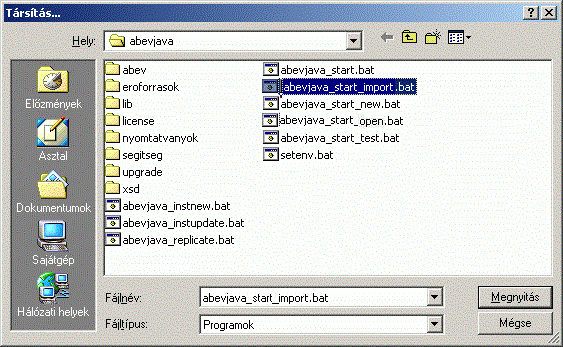
- Az Megnyitás gombra kattintva mentse el a beállításokat.
- Mentés után az alábbi beállításokat látja:
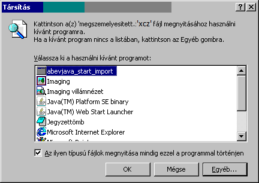
- A kis négyzetbe kattintva jelölje be, hogy az ilyen
típusú fájlok megnyitása mindig ezzel a
programmal történjen
- A OK gombra kattintva véglegesítse a beállításokat.
Windows XP esetén
- Válasszon ki egy xcz kiterjeszésû állományt és az egér jobb gombjával kattintson rá.
- A megjelenõ menübõl válassza ki a
Társítás...-t, és a Program
választása ... funkciót.
- Válassza ki a használni kívánt
alkalmazást a Tallózás gombra kattintva, és
keresse meg a java-s nyomtatványkitöltõ program
telepítési könyvtárát és ott
válassza ki az abevjava_start_import.bat-ot:
- Az Megnyitás gombra kattintva mentse el a beállításokat.
- Mentés után az alábbi beállításokat látja:
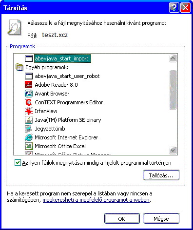
- A kis négyzetbe kattintva jelölje be, hogy "Az ilyen
fájlok megnyitása mindig a kijelölt programmal"
történjen.
- A OK gombra kattintva véglegesítse a beállításokat.
Windows Vista esetén
- Válasszon ki egy xcz kiterjeszésû állományt és az egér jobb gombjával kattintson rá.
- A megjelenõ menübõl válassza ki a Open (Megnyitás) funkciót.
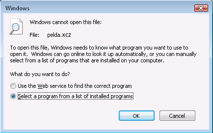
- Jelölje ki a képen látott módon, hogy a
számítógépen keresse listából
a társítandó programot. (Select a program from a
list of installed programs)
- Nyomja meg az Ok gombot
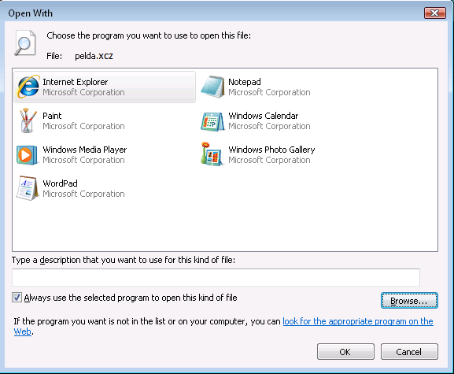
- Válassza ki a használni kívánt
alkalmazást a Browse (Tallózás) gombra kattintva.
Az alábbi ablak jelenik meg:
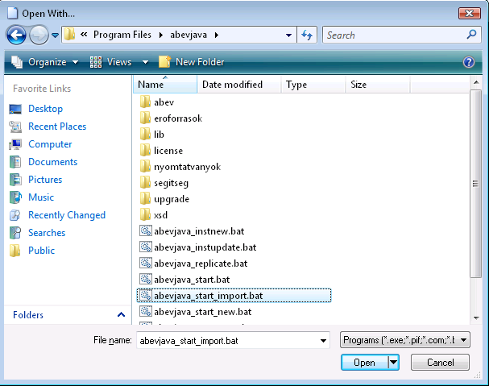
- Keresse meg a java-s nyomtatványkitöltõ program
telepítési könyvtárát és ott
válassza ki az abevjava_start_import.bat-ot:
- Az Open (Megnyitás) gombra kattintva mentse el a beállításokat.
- Az alábbi beállításokat látja a megjelenõ ablakban:
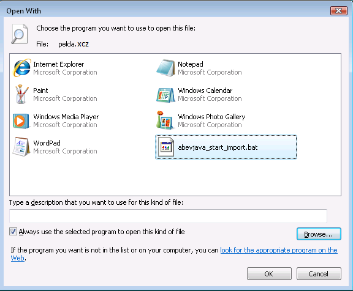
- A kis négyzetbe kattintva jelölje be, hogy az "Az
ilyen fájlok megnyitása mindig a kijelölt
programmal" történjen. (Always use the selected program to
open this kind of file)
- A OK gombra kattintva véglegesítse a beállításokat.
Windows 7 esetén
- Válasszon ki egy xcz kiterjeszésû állományt és az egér jobb gombjával kattintson rá.
- A megjelenõ menübõl válassza ki a Megnyitás funkciót.

- Jelölje ki a képen látott módon, hogy a
számítógépen keresse listából
a társítandó programot. (Kiválasztom a telepített programok listájából)
- Nyomja meg az Ok gombot

- Válassza ki a használni kívánt
alkalmazást a Tallózás gombra kattintva.
Az alábbi ablak jelenik meg:
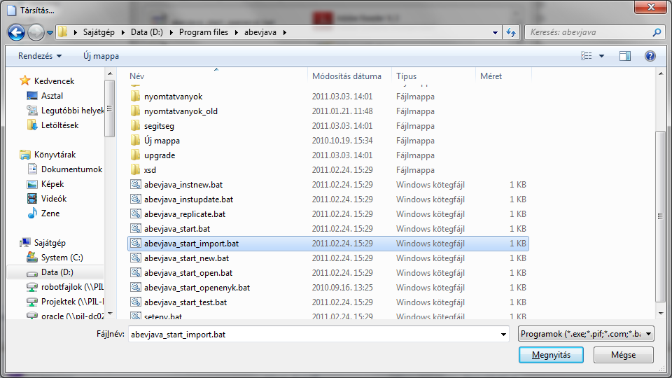
- Keresse meg az ÁNYK program
telepítési könyvtárát és ott
válassza ki az abevjava_start_import.bat-ot:
- Az Megnyitás gombra kattintva mentse el a beállításokat.
- Az alábbi beállításokat látja a megjelenõ ablakban:

- A kis négyzetbe kattintva jelölje be, hogy "Mindig
a kijelölt program nyissa meg az ilyen típusú
fájlokat." történjen.
- A OK gombra kattintva véglegesítse a beállításokat.